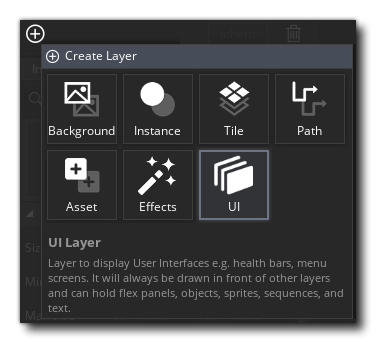
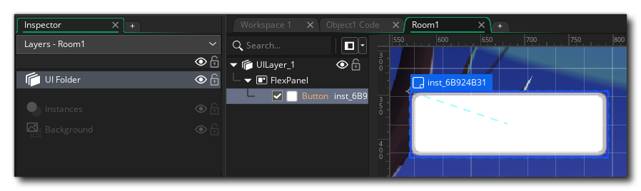
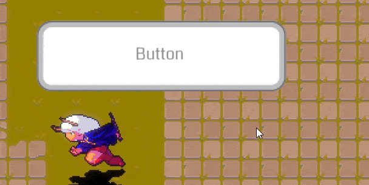
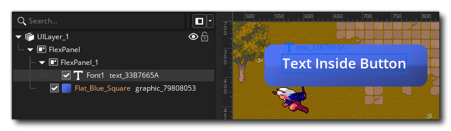
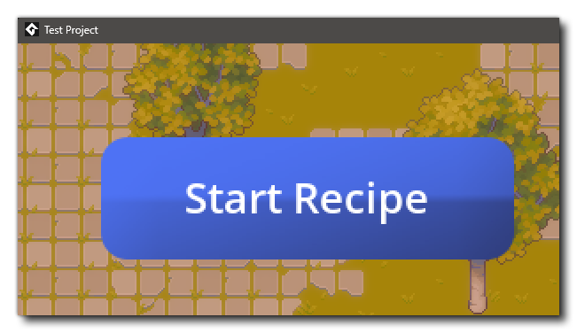
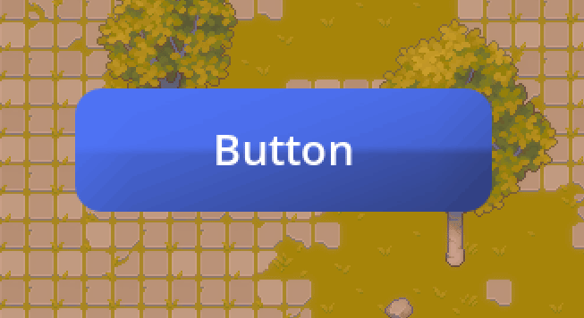

On the Drawing page, we talked about drawing things within objects that are displayed in the room. Now, let's look at drawing things on the screen, to display GUI information, HUD etc. to the player. For this we make use of UI Layers.
UI Layers display their contents on the GUI Layer, which is a special drawing layer of a fixed width and height that is drawn over the contents of the room. The great thing about the GUI layer is that it doesn't move with the room's camera, so it's the ideal place to add static GUI (or HUD) items, like scores, healthbars and other information that your game requires to communicate to the user. You can find out more information on the GUI layer from the Draw Events section of the manual.
Rooms can be larger than the screen size, so you can have large levels for the player to move around in. This means that in the Room Editor (or in code) you need to define a camera that follows the action of your game.
This is basically a way of setting up a fixed area of the screen to display different parts of the larger room based on - for example - the player position in the room, and is used in a lot of games. Think of the way that the view always follows the main character in classic games like Mario or Zelda. That's done with cameras. For information on setting up cameras, see Cameras And Viewports.
All the drawing techniques covered on the Drawing page can be used on GUI, simply by creating an object and placing it in a UI layer in a room:


Anything you draw in the Draw event of that object will appear on the GUI layer, which you can see if you have a camera in the room while drawing something on GUI.
At runtime you will see the instance sticks to the screen, and not moving as the camera pans:

You can extend this to text, healthbars, or anything that can be rendered by an object. Everything will appear on the UI layer that it is placed on.
However, UI layers also come equipped with their own features, and you can place text and images natively in the Room Editor.
Text can be placed directly in a UI layer by dragging a font asset into the canvas, and images can also be placed by dragging sprite assets in. They are always placed inside Flex Panels:

These elements appear at runtime as they were in the editor. You can modify such text at runtime using the Text Element functions:// Get element
var _text_element = layer_text_get_id("UILayer_1", "text_33B7665A"); // Use the default element ID or a custom one
// Modify element
layer_text_text(_text_element, "Start Recipe");

Objects use GUI mouse coordinates when placed on a UI layer. This means all Mouse events and the coordinates returned by mouse_x/mouse_y are on the GUI layer.
For example, you can use the Mouse Enter and Mouse Leave events to change the opacity of a button object and the Mouse Left Pressed event to run some code:
Mouse Enter
image_alpha = 0.7;
Mouse Leave
image_alpha = 1;
Left Pressed
var _text_element = layer_text_get_id("UILayer_1", "text_33B7665A");
layer_text_text(_text_element, "Button (Clicked)");

By now you know how to place objects, images and text in UI layers, and how to interact with them. The next step is to design a layout, like a HUD screen or a menu that you can use.
The below examples take you through creating a HUD screen and a simple button menu.
example showing four objects in different corners of the screen
example showing three buttons laid out vertically